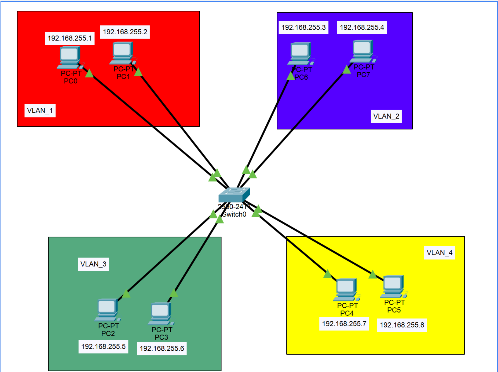

Dans le cadre de ma formation en BTS Services Informatiques aux Organisations (BTS SIO), j’ai eu l’opportunité de réaliser plusieurs projets concrets, à la fois en autonomie et en équipe. Ces projets m’ont permis de mettre en pratique les compétences techniques acquises en cours, que ce soit dans le développement d’applications, l’administration de réseaux, ou encore la gestion de bases de données. Chaque projet m’a permis de développer mon sens de l’analyse, ma rigueur et mes capacités à résoudre des problèmes techniques en conditions réelles.
Création d'un réseau LAN et création de VLAN
Dans le cadre du cours d’Administration Système et Réseau du BTS SIO, nous avons réalisé un TP sur Cisco Packet Tracer portant sur la création d’un réseau LAN. L’objectif de cet exercice était de concevoir et configurer un réseau local structuré, en intégrant notamment la notion de VLAN (Virtual LAN). Grâce à cette activité, nous avons appris à segmenter le réseau pour améliorer la sécurité et la gestion du trafic, en configurant les commutateurs, les ports, ainsi que le routage inter-VLAN.
Prérequis :
Procédure Technique :
Étape 1
Architecture Physique
Mise en place des équipements sous Packet Tracer :
- 1 Switch principal
- Plusieurs PC clients
- 1 Routeur (pour le routage Inter-VLAN)
- Câblage (droit) entre les équipements.
Étape 2
Création des VLANs
Accès au switch en ligne de commande (CLI) pour créer la segmentation logique :
Action : Création de 4 VLANs distincts.
Action : Création de 4 VLANs distincts.
Étape 3
Assignation des Ports
Association des équipements aux bons réseaux virtuels.
Action : Configurer chaque port du switch en mode "Access" et l'attribuer au VLAN correspondant.
Action : Configurer chaque port du switch en mode "Access" et l'attribuer au VLAN correspondant.
Étape 4
Adressage IP
Configuration de la couche réseau.
Action : Attribuer une IP statique à chaque PC selon son sous-réseau (ex: 192.168.10.2 pour le VLAN 10).
Action : Attribuer une IP statique à chaque PC selon son sous-réseau (ex: 192.168.10.2 pour le VLAN 10).
Étape 5 (Complexe)
Routage Inter-VLAN
Configuration du "Router-on-a-stick" :
- Liaison Trunk entre Switch et Routeur.
- Création de sous-interfaces (Gig0/0.10, etc).
- Activation de l'encapsulation dot1Q.
Étape 6
Tests & Validation
Vérification de la connectivité :
- Ping intra-VLAN (OK)
- Ping inter-VLAN via le routeur (OK)
Rendu Final

Figure : Architecture réseau finale segmentée et fonctionnelle